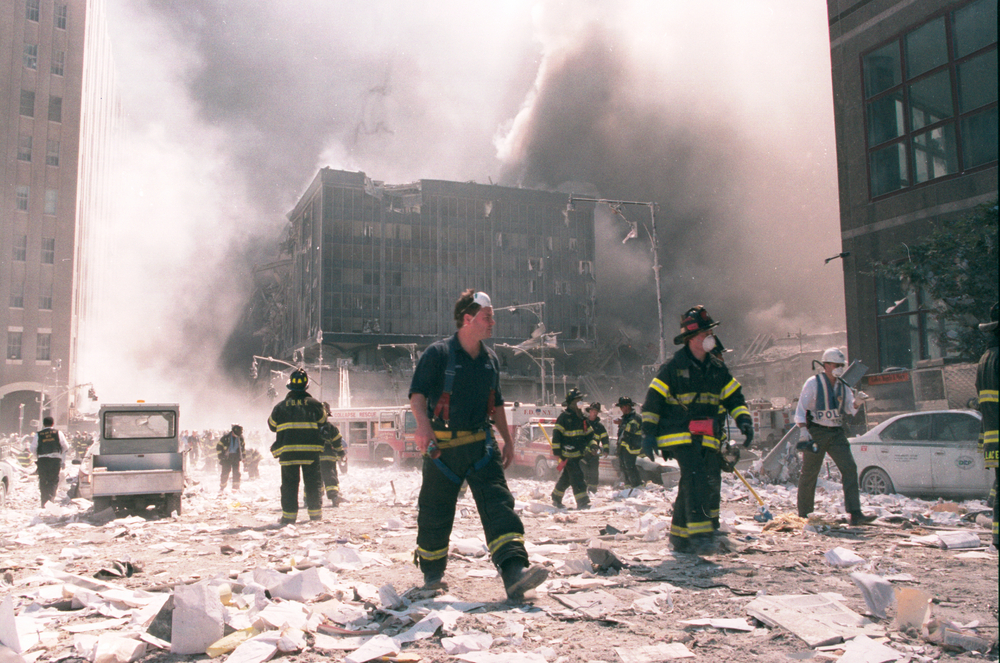
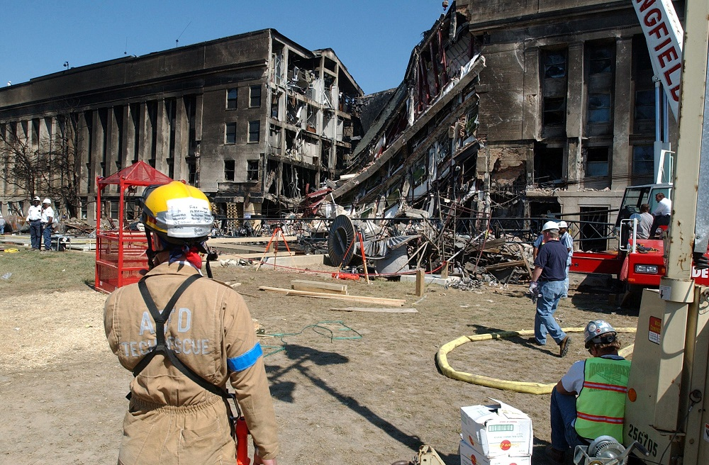
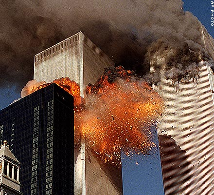
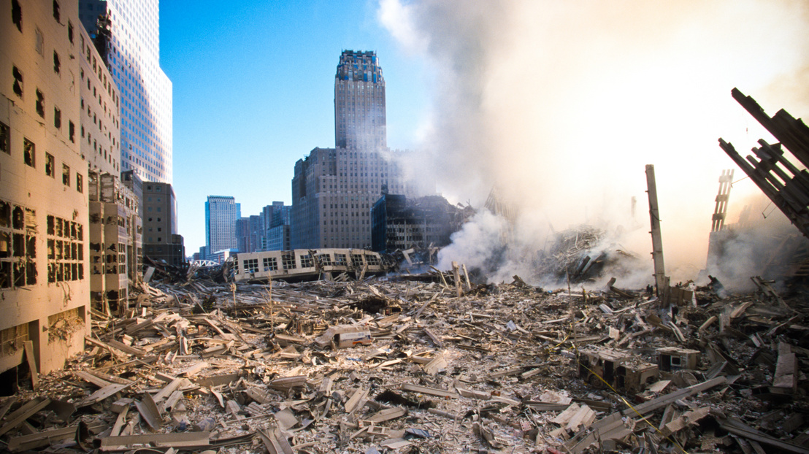
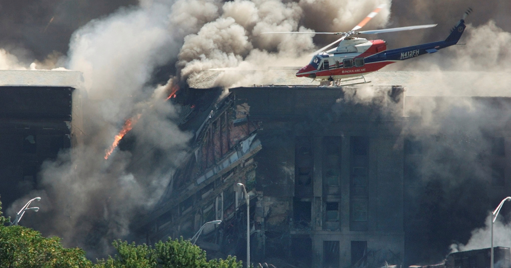
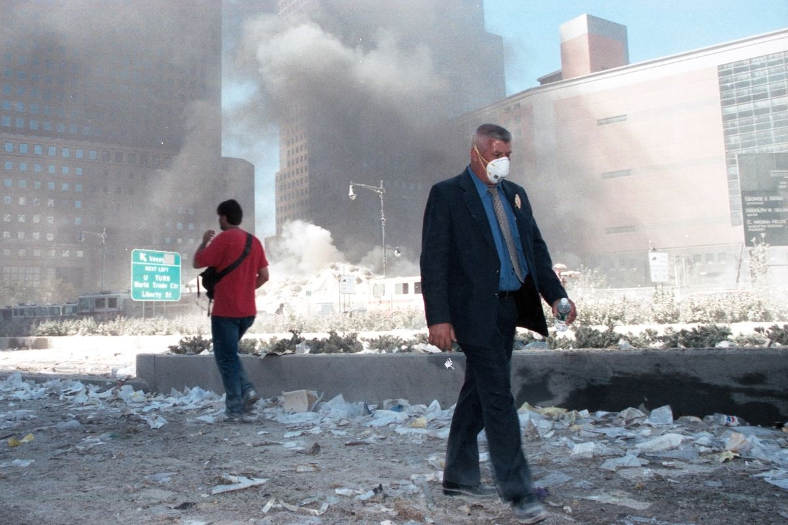

911 terrortámadás
Kezdőlap
Történet
Repülők
Következmények
Különleges képek
Videók tárháza
Összeesküvés-elméletek
Különleges képek az eseményről
A tűzoltók a támadás helyszínén

Tűzoltókról kép

Az égő ikertornyok

Az összedőlt épületek

Helikopter az égő épületnél

Emberek New York utcáin maszkban
